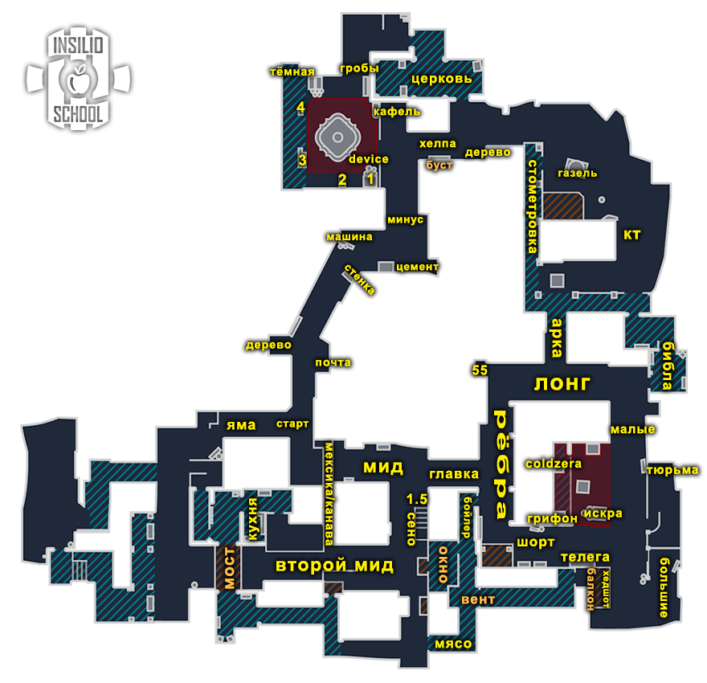
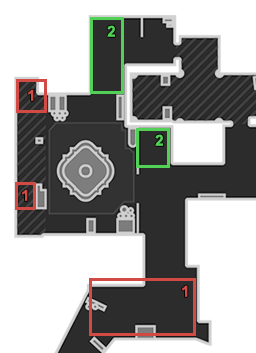
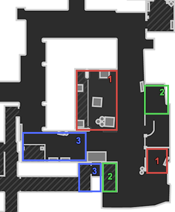

Inferno
Термины, правила, роли, дефолты, выходы, ретейки, пост-плент, пистолетки
Термины и общие правила
Сводный конспект по материалам insilio.org (лекции, записи лекций, гайды по гранатам и разборы). Гайды по гранатам на сайте содержат только названия раскидок и видео: пошагового текста (где стоять, куда целиться) в источнике нет.
Термины
| Термин | Значение |
|---|---|
| Дефолт | Расположение игроков по карте во время обычного раунда. Часто играется, чтобы понять, как играет противник на карте или её участках. |
| Кор (ядро) | Основная сила команды: 3+ игроков, играющих вместе. |
| Зоны карты | Места, контроль которых в данном раунде и в данный момент даёт преимущество. |
| 3-1-1 (цифры) | Сколько игроков находится под точкой А, на миде и на точке Б (порядок зависит от карты). На Inferno порядок: Б-Мид-А. |
| Контакт | Движение до первого столкновения с противником с минимумом шума, без гранат. |
| Люрк | Игрок, отвечающий за свою зону. Если команда выходит через его зону, он обычно выходит первым. Если команда играет через другую зону, он закрывает спину тиммейтам или играет в спину противникам через свою зону. |
| Микро | Контроль своего персонажа: движение, аим, правильное использование гранат. |
| Макро | Понимание ситуации, принятие решений: пассивно или агрессивно, быстро или медленно и т.п. |
Общие правила атаки T
- Если у защиты нет AWP - играть контактнее, кидать меньше смоков.
- На позднем тайминге, после разменов, играть через "центр карты" в контакт, без шума.
- Первым играет большинство (core).
- Люркеры должны контачить точки, если кор плохо разменялся.
- Ставить бомбу под тиммейта или в зону, из которой пришли.
- Когда КТ начал дефать - считать секунды.
- При заходе на точку следить за кучностью, останавливать тиммейта, если он ушёл далеко.
- Считать смоки, которые тратит КТ.
Общие правила защиты CT
- Последний смок всегда на бомбу.
- Ситуации 2 в 1 играть вместе.
- Первым играет большинство (на ретейк).
- В меньшинстве нужно что-то делать: вместе пушить или стакать, то есть рисковать.
- В большинстве играть от зон, без особого риска, больше на чек / на стрейфе.
- Против +W-игроков тратить все антираш-гранаты, пикать в ответ на средних таймингах.
- Если под одной точкой агрессия, под другой играть на удержание и сейв.
Правила Inferno за Т (атака) T
- Против эко не лезть в апсы, отдать банан до первой инфы, собирать инфу через главку с паузой.
- Если при занятии банана умер игрок и мы вынуждены его отдать - стянуть +1 с апсов и дозанять банан вторым таймингом.
- Занимая тачку на банане после гранат, второй всегда стоит анти-флеш.
- Апс-игрок не занимает апсы в соло, пока не получит информацию, что у защиты точно нет сетапа в апсах. Нужна инфа по банану и миду; если хотите занять на 100%, нужен ваш хелпующий.
- При занятии тачки под один молик давать его на сенд, а не на поворот.
- Если большинством под Б убили одного игрока - заходить +В без колла под гранаты одного игрока.
- После ретейка банана или после долгого холда с занятым бананом, если хотим закончить Б, предварительно раскинуть рёбра.
- Играть и банан, и церковь на пост-пленте Б нельзя - только что-то одно. Если заняли церковь - отдай банан, иначе всегда плохо разменяемся в одной из зон.
- Выйти на Б, если у КТ нет гранат. Даже 3 контра не примут хороший выход.
- Если после занятого банана контр громко стягивается с Б на А - раскинуть рёбра и закончить Б.
- Лучшая позиция для 1в1 на А - апсы.
Правила Inferno за КТ (защита) CT
- Если мы заняли банан - отдать рёбра и уйти в плент на А.
- Если апс-игрок замечает игрока апсов (теров) в другом месте карты - сейвить свои гранаты, отменить дефолтную рутину.
- Если ты один на Б и тебя рашат - уходить нужно в КТ.
- 5в3 на А: важно сыграть либо 2 яма, либо 2 сайт.
- 2А: тратить только один дым (либо мид, либо апсы).
- Реагрессия делается с тиммейтом либо под распик авика.
- Не обновлять глубокий смок на банан после того, как вы его заняли; сейвить и закрываться им в пленте после ретейка от теров.
- Играя 4А в середине раунда, важно иметь либо 2 яма, либо 2 плент.
- Если теры занимают рёбра, а вы стоите 3Б на позднем - нужно пробивать банан.
- Не играть сетапы в апсах и на шорте против плохого бая.
- Нужна хотя бы одна из зон для сбора инфы о том, где теры: апсы, рёбра или тачка.
- Лучше обновлять смок в апсах или оставлять его на приёмку, чем обновлять смок на рёбра.
- В 4-м не стоять 2+2, лучше играть 3+1 по собранной инфе.
Позиции и роли


Названия зон, встречающиеся в материалах: банан, тачка (машина), упор, рёбра, ковры (апсы), главка, мид, второй мид (секонд), шорт, лонг, пески, плент, яма, библиотека (библа), арка, малые, КТ, КТ-респ, Т-респ, церковь, гробы, балкон, бойлер, сено, фонтан, дерево, канава, щиток, стенка, минус, единица, почта, тройка, хелпа.
Роли за Т (атака) T
| Роль | Описание |
|---|---|
| Игрок банана | Роль для звёздного игрока: отжимать банан. Дуэлей много, их нужно выигрывать. |
| Хелпующий банана | Саппорт банана, часто играет в размен. Хорошая роль для капитана. |
| Игрок апсов (люрк) | Отжимает апсы и контролирует прожимы, когда команда играет под Б. |
| Второй игрок апсов | Играет в паре с люрком, помогает отжимать апсы, в том числе гранатами. |
| Авапер | За атаку на этой карте играть с AWP не очень комфортно; можно спокойно играть с рифлой, пока не отберёте AWP у КТшника. |
Роли за КТ (защита) CT
| Роль | Описание |
|---|---|
| Опорник Б (бананер) | Главный на Б, играет в паре со своим хелпером, говорит, что и как накинуть. |
| Хелпующий Б | Помощник опорника, менеджер гранат. Тот, кто уходит играть четвёртым под А. |
| Опорник А (ковры) | "Бетон" А, плента и ковров; самый последний на перетяжке, всегда должен закрывать люрка от атаки. |
| Хелпующий А | Капитанская роль, свободный игрок, часто отдаёт/дропает гранаты на Б. Стартует 3Б, первым хелпует под Б-точкой. |
| Авапер | "Летучий голландец": может сыграть агрессивно под Б или А. За КТ нужно хорошо чувствовать, под какой точкой стартовать. |
Дефолты
Три элемента дефолта
- Старт — собираем информацию и отжимаем зоны, получаем контроль над ними.
- Середина — принимаем решение (мид-кол), куда идём дальше. К этому моменту зону уже должны отжать либо вести за неё войну.
- Конец — постановка бомбы и пост-плент ситуации.
Типы дефолтов
- Обычный: играем спокойно, от информации, не торопимся, отжимаем всё под гранаты и работаем вместе. При необходимости реагируем по информации, отменяем план и выходим туда, где соперник даёт минимальное сопротивление. Пример: КТ показывают агрессию на миду — для этого нужно минимум 2–3 КТшника, значит быстро реагируем в точку, если есть возможность.
- Агрессивный: задача отжать зону любой ценой. Даже если получили инфу, что КТ дерётся за мид, принимаем файт. Главное — навестись на голову быстрее оппонента. При этом грамотно используем гранаты и движение, а не просто бежим W; у нас есть мысль на раунд, которую мы реализуем.
Дефолты за Т T
| Дефолт | Задача | Большинство | Меньшинство |
|---|---|---|---|
| 3-2 | Тройка занимает банан резко либо ретейкает в лейте. Двойка отыгрывает свой дефолт, дальше по колу; в основном заканчиваем 4 под Б, 1 люрк контролирует спину с А. | Доиграть в точку по инфе, от того, где нашли преимущество. | Легче всего доигрывать в Б. |
| 2-3 | На банане играем от того, что предложит соперник: активно играют - можно ретейк, отдают - аккуратно занимаем. Основная задача тройки на А - занять рёбра + ковры. | Доиграть по инфе; хороший вариант - выпустить одного под А или Б и дальше от его инфы. | Легче всего доигрывать в Б. |
| 4-1 | Главная задача - занять банан. Тройка играет активно, четвёртый на гранатах и контролирует прожим мида. Пятый контролирует апсы и прожим. | Доиграть в Б. | Доигрывать от инфы: сколько и где КТшников. |
Дефолты за КТ CT
| Дефолт | Описание | Цель / план Б |
|---|---|---|
| 2-3 | Самый простой вариант: главное иметь 3 смока под Б (3-й смок кидают с респы либо дропают). Под Б лучше играть пассивно, но можно делать выпады, продумав идею заранее. Тройка на А может играть от рёбер либо от плента. | Цель: играть пассивно от смоков, действовать по полученной информации. План Б: стакать точку - лучший вариант на этой карте. |
| 3-2 | Агрессивный вариант под Б: занимаем банан. Двойка на А должна играть от сетапа; самый простой вариант, чтобы не ошибаться - сетап в пленте или песках. | Цель: отжать банан, дальше играть 4А. План Б: стакать точку. |
Рекомендуется смотреть демки команд Vitality и 3DMAX. Видео по каждому дефолту и роли — видео в оригинале.
Выходы, ретейк, пост-плент, парные комбинации
Выходы T
Выход А
Кор играет в шорт, один игрок — лонг + ковры. Задача: отдать смок в малые, молик в пески и дать флешки на заход, остальное по ситуации. Рёбра занимать не обязательно, но апсы нужны.
Выход Б
Хороший выход Б — всегда про 2 смока, 2 молика и 2 флешки (опен и на продление). Отлично работает против плохого бая либо когда у КТ нет гранат.
Выход ковры
«Самый олдовый» раунд на карте, хорошая доигровка. Нужны смок + молик и опен-флешка. Делаем, когда чувствуем, что 3Б + люди на А играют от упор-мида.
Сплит Б
Сложен в исполнении: нужен контроль на банане и минимум ковры под А, а лучше и рёбра. Из гранат важно дать смок на сплит, дальше доигрываем 2+3 либо 3+2 в сторону Б. Хорошо работает, если соперник играет от плента под А.
Круговой выход А
Похож на выход А, но кор играет 3 лонг. Отдаём два смока — в арку и библиотеку, дальше крутим. Игроки в шорте и апсах ждут активностей кора и играют по ним. Хорош, когда знаем, что под А два игрока, либо на пистолетах.
Ретейк
Ретейк Б
Молотов на тройку + тёмная; если один смок — на бомбу, если два — банан + бомба. В некоторых ситуациях можно отдать молотов на кафель, если понимаете, что там есть игрок. Кор с КТ под большое количество гранат, один игрок в руинах; если гранат почти нет — масс руины.
Ретейк А
Главное — отдать молотов / 2 гранаты в пески; молотов отдаём в тайминг, чтобы тиммейт мог пикнуть под него. Меньшинство играет с апсов, большинство — шорт/лонг.
Ретейк Банана
Нужно обязательно знать. Задача — перезанять банан, для чего используем весь пак; обычно отжимаем только упор, в некоторых вариациях можно занимать глубже.
Пост-плент
Б-плент

А-плент

Парные комбинации
Атака T
- Буст апсы — «секретная фишка» (видео в оригинале, есть детальный разбор).
- Буст тройка — ситуативный буст, работает и за Т, и за КТ; больше всего раскрывается на пост-плент ситуации.
- Двойное занятие рёбер — работа под А от двойки, играющей через второй мид. Смок на прикормку, затем на занятие + молотов по фонарю.
- Мини-комба на банане — как правильно занимать банан под смок и молотов.
- Тройняши — комбинация против активных бананеров.
- Быстрое занятие ковров — грамотное занятие ковров под прошив + флешки.
- Энтри-мув — соло-мув, чтобы взять дуэль и помутиться.
Защита CT
- Сетап на А (рёбра) — лучшая комбинация на рёбрах от КТ, каждый контролирует свою зону.
- Агрессивный сетап в коврах — AWP с респы пикает ковры, второй игрок с бойлера отдаёт молотов на балкон; пытаемся сломать дефолт атаки под вторым мидом.
- Вариант игры под А — AWP в песках + рифла в пленте; больше на неждан, часто так играть смысла нет.
- Комбина в коврах — базовый буст в бойлере для контроля ковров.
- Правильный агрессивный пик на банане — вариант агрессии под Б, можно с AWP.
- Сетап Б с авиком — приёмка под Б; смок отдавать не нужно, разве что по хорошему тайминг.
- Сетап под AWP на банане — откинуть две ХЕ, AWP фокусит бегущего. От третьего игрока летит смок на занятие + молик под стенку. Если на вас выбегают — после килла отдать (как на видео); если никого нет — пропикать упор рифлеру, авапер может пикнуть с кара. Под всё это летит флешка от третьего игрока из-за машины.
- Щипцы — агрессивный вариант, зажимаем соперника с двух сторон.
- Ловушка Б — замануха для атаки: игроки под Б играют пассивно на смоках, затем запускают атаку и врываются в ответ.
- Занятие банана от 3DMAX — интересный вариант игры на банане втроём.
- Буст AWP на А — мув от AWP, чтобы найти энтри по Т; хорошо работает 1–2 раза за игру.
Пистолетки, эко, форсы, антифорсы
В CS2 важность пистолеток, форсов и антифорсов возросла: раундов за карту стало меньше, значимость каждого раунда выше. Кто стабильно берёт пистолетки, не отдаёт антифорсы и забирает форс-баи у соперника, всегда впереди за счёт экономики. Помимо личного скилла нужна идея на раунд.
Пистолетки
Т пистолетка #1 T
Раунд на все случаи жизни.
- Закуп: 2 пака гранат (смок + молотов) и (смок + 2 флешки).
- Старт 4+1; игрок с флешками держит их на антипуш, чтобы законтрить агрессию КТ на банане. В начале контролируем прожимы, затем занимаем зону под Б. Один игрок всё время контролирует прожим А.
- Дальше два пака на Б: КТ + гробы + молик на тройку, одна опен-флешка, вторая на продление.
- Второй вариант: если у нас отжимают банан либо мы понимаем, что КТ играет 3Б — переигрываем под А. 4 шорт + 1 апсы, смоки отдаём на лонг (лучше от руки), смок на малые + молик на пески и 2 флешки на проход. Мобильный раунд под любого соперника; главное — не поймать одну и действовать по ситуации.
Т пистолетка #2 T
«Секретная турецкая»: додж второго мида, затем фаст А под смок на малые и флешку над апсами. Не обязательно брать беретты — можно тек или 2 флешки. Фастовая рабочая пистолетка, особенно если с первой убивает игрока в коврах.
КТ пистолетка #1 CT
Нестандартная: байтим на заход в плент под Б, пикаемся под флешки с гробов. Двойка на А играет сетап плент + пески, есть смок, чтобы сдерживать теров. Комбинация — «ловушка Б».
КТ пистолетка #2 CT
Старт 2Б + 3А, в закупе беретты, которые играют в апсах + на Б. Играем от всего. Можно докупить смок + флеш под Б либо киты.
Эко
- Эко КТ CT: один из самых популярных вариантов, так называемый «Астралис»; можно и под А (в лонге либо под балконом).
- Эко Т T: больше похоже на полуэко, нужны гранаты (2 смока, 3 флешки). Задача: отогнать банан, затем забежать на Б. Против эко соперник часто играет занятие банана — главное задоджить первый дамаг, дальше забегать под свои гранаты.
Форсы
- Форс КТ #1 CT: отыгрываем Б-раш, даём смок на занятие + потушка. Затем 4А + 1Б на смоке (сильный ган на Б), КТшнику на Б продлевать смок с А-точки. Дефолтный дым на минус (видео в оригинале).

Форс КТ #1: дефолтный дым на минус - Форс КТ #2 CT: стак Б, чтобы перебить банан. Если там чисто — перестраиваемся на 2-3 или 1-4 на А. Главное сделать выпад для сбора инфы. Если соперник не занимает пространство под Б — ждать и пробивать лишь на тайминг.
- Форс Т T: сыграть ретейк банана, чтобы у КТ не было инфы под Б, затем перестроиться под А: занимаем рёбра под смок + молотов. Далее смок на малые + флешки на проход от одного игрока, тройка давит шорт и один с апсов. Опционально — молотов либо 2 ХЕ в пески. Вариант доигрыша под А, если не хотим или не получается играть Б, но под бананом всё равно надо поработать (кроме ситуаций с фаст А).
Антифорсы
- Антифорс Т #1 T: 4+1, не поймать гранаты на банане (можно занимать в лейте), затем а) занимаем под 2 молотова, б) доджим ретейк (антифлеш, упор занять), в) раскид Б (2 смока + 2 молотова + 2 флешки). Люрк контролирует поджим мида.
- Антифорс Т #2 T: старт 2-3, затем фулл-контакт под А: 4 лонг + 1 апсы. Играем в размен, при необходимости докидываем смок арка + библа.
- Антифорс КТ, вариант 1 (3 игрока) CT: отыграть Б-раш, затем молотов на дерево + 2 ХЕ на почту, смок на занятие, начинаем активно пикать после флешки с гробов. Если никого не увидели — оставить пак и играть 1-4, учитывая возможный резкий врыв на банан, к которому четвёртый должен успеть под Б.
- Антифорс КТ, вариант 2 (2 игрока) CT: занимаем банан вдвоём. Смок дают на старт с респы, 2 молотова + 2 ХЕ отдаём мы. Сетап под А: лонг + 2 шорт, один смотрит апсы. Если под Б всё хорошо — можно играть 4А.
Записи лекций: тайм-коды
Записи доступны в качестве 1080p и 720p (лекция 4 — 1080p). Организационные части (футболки, видосы, лига и турнир, тикеты, призы за курс) опущены.
Запись 1 (24 мая): Дефолт. Роли. Inferno
- 12:08 термины
- 14:50 введение
- 16:01 три элемента дефолта
- 17:00 типы дефолтов
- 17:50 позиции
- 19:20 важные зоны
- 20:42 дефолт Т 3-2
- 23:52 Т 2-3
- 27:20 Т 4-1
- 34:14 КТ 2-3
- 38:50 КТ 3-2
- 45:12 роли атаки (45:15 игрок банана, 46:32 хелпующий, 47:43 апсы/люрк, 50:03 авапер)
- 51:04 роли защиты (51:15 опорник Б, 54:12 хелпующий Б, 55:03 опорник ковров, 56:26 хелпующий А, 58:15 авапер)
- 59:20 ДЗ
- 1:03:40 вопросы
Запись 2 (31 мая): Выход. Пост-плент. Ретейк. Парные комбинации
- 3:15 А выход
- 6:56 Б выход
- 9:00 выход ковры
- 11:34 сплит Б
- 13:33 круговой выход А
- 17:20 ретейк Б
- 19:56 ретейк А
- 21:08 ретейк банана
- 23:39 пост-плент Б
- 26:05 пост-плент А
- 27:50 комбинации атаки (28:23 буст апсы, 29:34 буст тройка, 30:24 двойное занятие рёбер, 33:33 мини-комба на банане, 36:53 тройняшки, 38:22 быстрое занятие ковров, 40:39 энтри-мув)
- 42:32 комбинации защиты (42:38 сетап на А, 44:46 агрессивный сетап в коврах, 46:46 вариант игры под А, 48:34 комбина в коврах, 49:38 агрессивный пик на Б, 51:52 сетап Б с авиком, 53:07 сетап под AWP на банане, 54:54 щипцы, 58:57 ловушка Б, 1:03:10 банан от 3DMAX, 1:06:03 буст AWP на А)
- 1:07:07 ДЗ
- 1:09:12 вопросы
Запись 3 (7 июня): Общие правила. Правила Inferno
- 7:30 общие правила атаки
- 18:40 общие правила защиты
- 30:47 правила Inferno (Т#1 31:50 ... Т#11 52:40
- КТ#1 55:17 ... КТ#13 1:15:56)
- 1:20:14 вопросы по правилам
- 1:28:04 ДЗ
- 1:29:55 вывод
- 1:31:24 вопросы
Запись 4 (14 июня): Пистолетки. Форсы. Антифорсы. Эко
- 4:30 Т пистолетка #1 (6:21 второй вариант)
- 8:55 Т пистолетка #2
- 12:11 КТ пистолетка #1
- 15:08 КТ пистолетка #2
- 18:50 эко КТ
- 19:28 эко Т
- 21:54 форс КТ #1
- 24:33 форс КТ #2
- 26:40 форс Т
- 28:50 антифорс Т #1
- 32:35 антифорс Т #2
- 34:34 антифорс КТ (35:57 вариант на 2 игроков)
- 37:31 вывод
- 39:15 ДЗ
- 40:50 вопросы